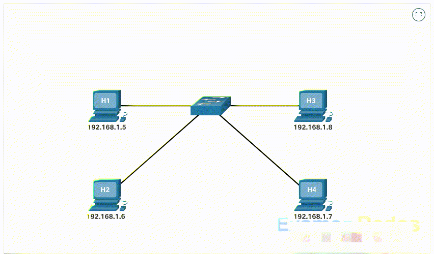

Especificación del RFC 826, Métodos de Transmisión y Mapeo de IP a MAC en Redes Locales
Métodos de transmisión de un host en una red local:
255.255.255.255 o MAC
FF:FF:FF:FF:FF:FF). Se procesa obligatoriamente por todas las NICs de la red.El Address Resolution Protocol (ARP) permite asociar una dirección IP (Capa 3 / Lógica) con una dirección MAC (Capa 2 / Física) dentro de un mismo dominio de difusión Ethernet.

Las aplicaciones operan con direccionamiento IP, pero la entrega de marcos en la red local se realiza a través de las direcciones MAC procesadas por la NIC.
Los sistemas operativos almacenan dinámicamente las entradas IP-MAC aprendidas en la memoria RAM para optimizar el tráfico de red:
+------------------+-------------------+---------------+------------+
| Dirección IP | Dirección MAC | Tipo | Estado |
+------------------+-------------------+---------------+------------+
| 192.168.1.1 | 00-11-22-33-44-55 | Estática | Permanente |
| 192.168.1.20 | 00-11-22-AA-BB-CC | Dinámica | Activa |
| 192.168.1.30 | 3C-D9-2B-10-4F-A2 | Dinámica | Activa |
| 255.255.255.255 | FF-FF-FF-FF-FF-FF | Estática | Permanente |
+------------------+-------------------+---------------+------------+FF:FF:FF:FF:FF:FF.Formato del paquete de datos ARP (28 bytes sobre encabezado Ethernet):
+-----------------------------------+-----------------------------------+
| Tipo Hardware: Ethernet (0x0001) | Tipo Protocolo: IPv4 (0x0800) |
+-----------------------------------+-----------------------------------+
| Tamaño MAC: 6 Bytes | Tamaño IP: 4 Bytes |
+-----------------------------------+-----------------------------------+
| Opcode: 1 (Request / Pregunta) / 2 (Reply / Respuesta) |
+-----------------------------------------------------------------------+
| MAC Emisor (SHA) - [6 Bytes] |
+-----------------------------------------------------------------------+
| IP Emisor (SPA) - [4 Bytes] |
+-----------------------------------------------------------------------+
| MAC Destino (THA) - [6 Bytes] (00:00:00:00:00:00 en Request) |
+-----------------------------------------------------------------------+
| IP Destino (TPA) - [4 Bytes] |
+-----------------------------------------------------------------------+# Mostrar tabla ARP
arp -a
# Borrar tabla ARP (Requiere privilegios de Administrador)
arp -d *# Ver vecinos ARP
ip neighbor show
# Limpiar caché ARP
sudo ip neigh flush dev eth0Debido a la ausencia de autenticación en el RFC 826, un atacante puede enviar respuestas ARP no solicitadas para asociar su MAC a la IP del Gateway, facilitando ataques de tipo Man-In-The-Middle (MITM).
En IPv6 no existe el protocolo ARP ni las transmisiones por broadcast. Se utiliza en su lugar NDP (Neighbor Discovery Protocol) sobre mensajes Multicast ICMPv6.